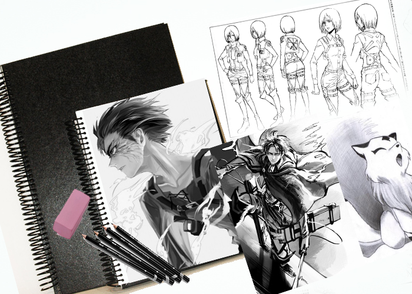

Bienvenidos a mi blog de dibujo
Hoy les intentare enseñar como dibujar
(Lo básico) y les mostrare algunas técnicas que me han ayudado a aprender
(no se dibujar extremadamente bien)pero les quisiera mostrar de todas maneras.
Todos tenemos manos capaces de pintar una raya, y no hace falta mas que un montón de rayas. Lo que falla no es la mano si no la forma de mirar las cosas. Solo hace falta saber como mirar y un poco de paciencia.
!!!ya con esto espero haberlos inspirado para aprender a dibujar, comenzamos!!!
